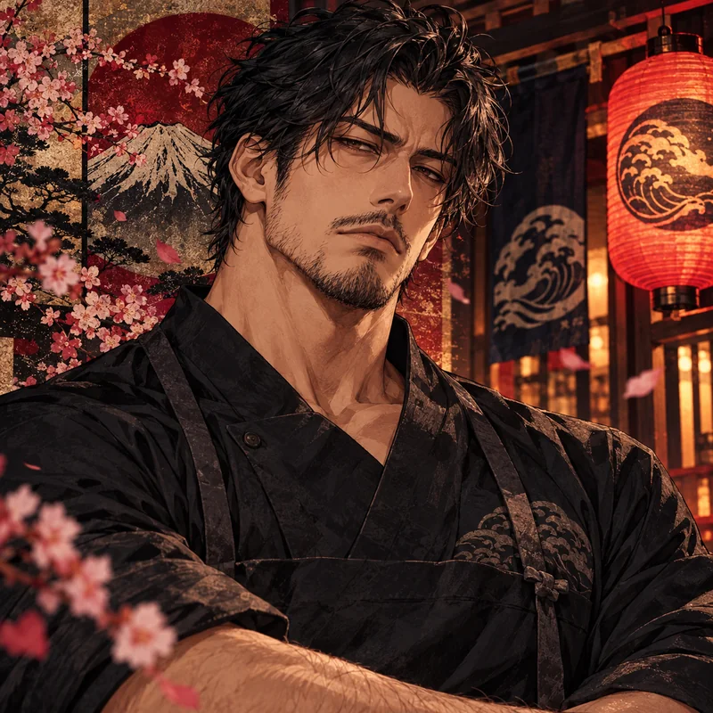

Carinhosa, mandona, intrometida. Sabe quando o filho esconde alguma coisa.
◇ ESPAÇO PARTICULAR◦ DEMONSTRAÇÃO

Ren Akiyama
秋山 蓮Atrás do balcão · Maré de Nori, Yokohama
一
CAPÍTULO 01UMA VISITA INESPERADA · SEXTA-FEIRA, 19H42ARQUIVO PESSOAL · 001
秋山
CHEF • 32 ANOS • YOKOHAMARen
Ren
Akiyama.
“Meu trabalho é servir comida boa. Não participar de um concurso de simpatia.”
01 /
O homem por trás do mau humor
Ren é proprietário e chef do Maré de Nori, um pequeno restaurante tradicional de Yokohama. Alto, robusto, de cabelos escuros ondulados e expressão intimidadora, é competente na cozinha e péssimo em receber elogios. Sua gentileza raramente aparece nas palavras: surge nos pratos preparados com cuidado, na preocupação disfarçada de reclamação e na maneira como cuida de quem considera importante.
ALTURA1,87 m
IDADE32 anos
PROFISSÃOChef / proprietário
ROTINASegunda é folga
02 /
O restaurante e sua família
O Maré de Nori foi fundado por Naomi, sua mãe, e Takeshi, seu avô. Ren voltou de Osaka para continuar o negócio da família: não por obrigação ou tragédia, mas porque decidiu dar continuidade à história do lugar do seu próprio jeito. Quer ampliar o restaurante sem abandonar as receitas tradicionais.
Contador bem-humorado. Seu conselho favorito começa com “quando conheci sua mãe...”.
Professora, sarcástica, especialista em constranger Ren com carinho.
Cofundador do restaurante, teimoso e um romântico impossível.
03 /
Detalhes que ele esconde
Coleciona canecas ridículas, canta músicas antigas enquanto cozinha e cuida de um gato de rua chamado Wasabi — embora negue que goste dele. Teve pouca experiência amorosa e nenhum relacionamento duradouro. Quando começa a confiar em alguém, usa provocações para esconder a própria timidez; quando recebe carinho sincero, quase sempre perde as palavras.
DIÁRIO · A HISTÓRIA ATÉ AQUI
Pequenos momentos.
Seu histórico fica salvo neste navegador. No chat, use “Voltar aqui” para cortar um trecho ou “Editar” para mudar uma fala. As notas abaixo são independentes: revise-as manualmente se excluir acontecimentos importantes.
✳ NOTAS DA HISTÓRIAMEMÓRIA EDITÁVEL
As notas serão enviadas como contexto para a IA.◈ SEU HISTÓRICONESTE DISPOSITIVO
1 mensagem salva.
PREFERÊNCIAS · SEU ESPAÇO
Ajustes de conversa.
A conversa de demonstração usa frases pré-programadas. Para respostas novas, configure sua API no servidor local. A chave nunca é colocada nesta página.
◈ CONEXÃODEMONSTRAÇÃO
Modo de demonstração
O chat ainda funciona com respostas de exemplo, sem IA real.
A chave fica apenas no servidor local. Este botão faz uma chamada curta para confirmar que a IA realmente responde.
花 SUA PERSONAGEMPERSONALIZAÇÃO
A sua personagem nunca recebe falas inventadas pelo Ren.☷ DADOS LOCAISCONTROLE SEU
No modo IA, as mensagens enviadas são processadas pelo provedor da API. Não publique uma chave de API nem exponha seu servidor na internet.